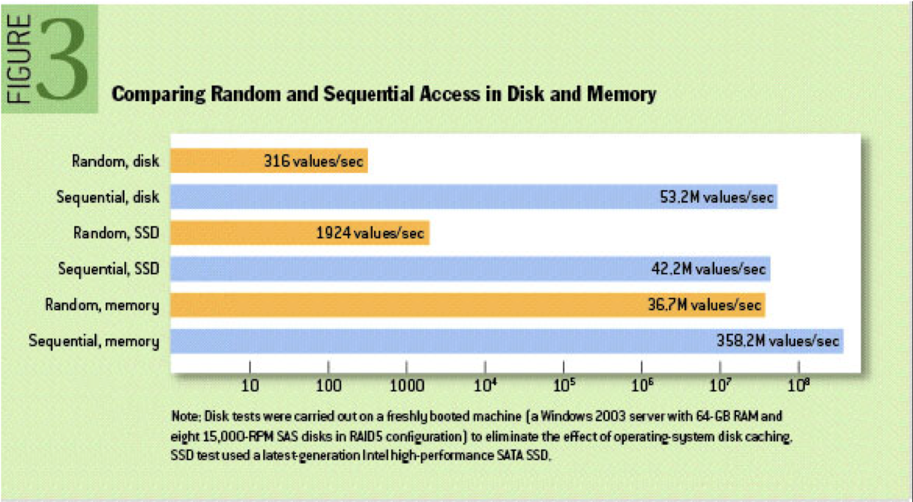
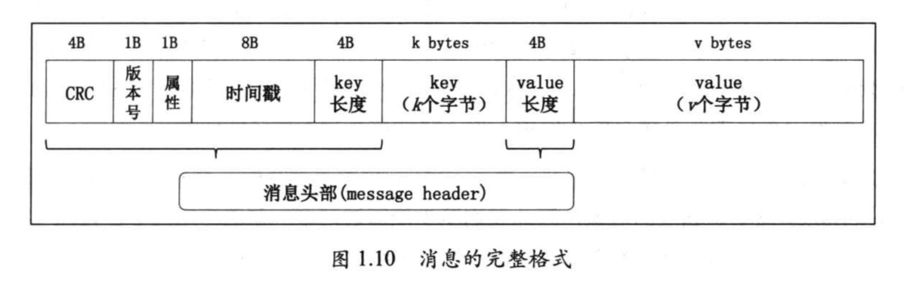
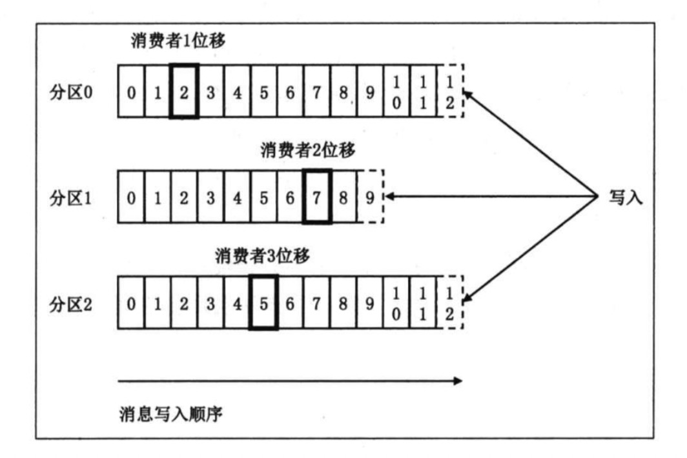
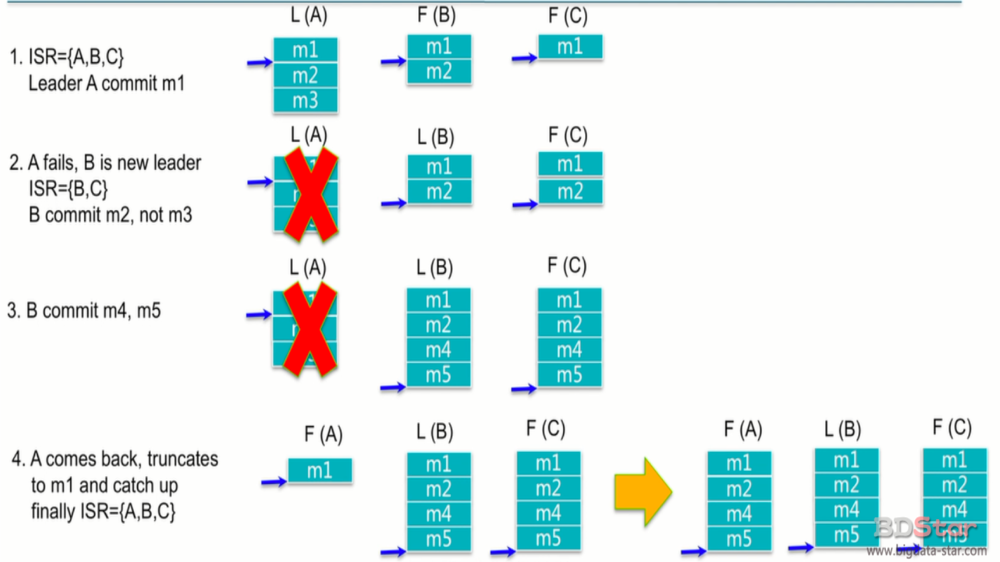

Kafka 是由 LinkedIn 开发的一个分布式的消息系统，使用 Scala 编写，它以可水平扩展和高吞吐率而被广泛使用。
Mac 安装kafka
1 | # 会自动 安装会依赖zookeeper |
配置文件位置
1 | /usr/local/etc/kafka/server.properties |
Kafka 架构
BrokerKafka 集群包含一个或多个服务器，这种服务器被称为 broker
Topic 逻辑上的概念,每条发布到 Kafka 集群的消息都有一个类别，这个类别被称为 Topic。（物理上不同 Topic 的消息分开存储，逻辑上一个 Topic 的消息虽然保存于一个或多个 broker 上但用户只需指定消息的 Topic 即可生产或消费数据而不必关心数据存于何处）
Partition 是物理上的概念，每个 Topic 包含一个或多个 Partition.
Producer 负责发布消息到 Kafka broker
Consumer 消息消费者，向 Kafka broker 读取消息的客户端。
Consumer Group 每个 Consumer 属于一个特定的 Consumer Group（可为每个 Consumer 指定 group name，若不指定 group name 则属于默认的 group）。
对于传统的 message queue 而言，一般会删除已经被消费的消息，而 Kafka 集群会保留所有的消息，无论其被消费与否。
当然，因为磁盘限制，不可能永久保留所有数据（实际上也没必要），因此 Kafka 提供两种策略删除旧数据。一是基于时间，
二是基于 Partition 文件大小。例如可以通过配置 $KAFKA_HOME/config/server.properties，让 Kafka 删除一周前的数据，也可在 Partition 文件超过 1GB 时删除旧数据
Kafka 特性
高可用 HA
通过 Zookeeper, 主节点挂了，从节点进行选举
负载均衡 fail over
通过hash 算法 将 key 路由到 不同的分区
Zookeeper允许集群中节点失败（若副本数量为n,则允许n-1个节点失败）可扩展
kafka集群支持 broker 水平扩展，热扩展
高吞吐率,低延时
kafka每秒可以处理几十万条消息，它的延迟最低只有几毫秒，每个topic可以分多个partition, consumer group 对partition进行consume操作。
高吞吐率 与 延时 是两个 相悖的概念，如果没2ms 处理 1条消息， 吞吐率 = 500条消息/s
如果采用批处理，延时8ms发送100 条消息，相当于 （8+2）ms发送了 100 条消息， 吞吐率 = 10,000/sKafka 发送数据：
- kafka 收到消息 现将消息写入页缓存中，而后由操作系统将消息写入磁盘
- Kafka不予文件系统打交道,是交由操作系统将缓存中的数据写入磁盘
将数据写入磁盘采用append方式，顺序写入磁盘，效率高

Kafka 消费数据：- kafka 消费数据 先从页缓存中读取，如果命中直接返回，不往硬盘中读取 零拷贝技术
可靠性
消息被持久化到本地磁盘，并且支持数据备份防止数据丢失
数据分区
消息可以被路由到不同的分区(hash 算法), 分区有 replica, 容错性
消费者多线程并行消费,高并发
支持数千个客户端同时读写
Kafka 基本概念
Message

key: 消息键值 分区时使用
value: 消息内容
timestamp: 消息发送时间戳,用于流式处理或其他依赖时间的处理语义
属性: 1字节， 目前只是用了 最低三位 用于保存消息压缩类型，其余五位未使用。
0 无压缩 1 gzip 2 Snappy 3 LZ4
为什么 kafka 消息缓存放在了页缓存,而不是放在 java 堆上
JMM 中,对象内存开销相当大。 堆上的数据量越大，GC的性能会下降很多
JAVA操作系统默认开启了页缓存机制，也就是说对上保存的对象很可能在页缓存中保留一份，开销大
Kafka 直接使用 ByteBuffer,而不是直接使用对象，占用空间少
大量使用页缓存而不是使用堆内存，当kafka broker进程崩溃时，堆上数据会消失一部分，而页缓存中的数据依然存在
topic
Topic 是一个逻辑概念,是一个逻辑概念，我们通常用topic来区分业务，
kafka 中的topic 会被多个消费者订阅，出于性能的考量，kafka 消息并不是 topic-message 两级结构，而是 topic-partation-message 三级结构来分散负载
topic 下面可以有 多个 partation, 一般 partation 数目 大于等于 3
partation

kafka 引入分区的概念 并没有太多的业务含义，而只是单纯的想提高吞吐量，因此创建kafka topic的时候， 可以根据集群配置设置具体的partation数，实现整体性最大化
partation有自己专属的 分区号，用户唯一能对partation 的操作就是在partation尾部追加写入消息。partation 上的消息都有一个唯一的 offset.用来定位消息
offset

显然，每条消息在 partation 的位置是固定的，但消费该partation 的消费者位移随着消费进度不断前移。
综上，topic partation offset, 我们 可以通过 <topic, partation, offset> 唯一确定一条消息的位置。
replica
kafka partation 是 有序消息日志， 那么一定不能只有一份日志。否则一旦持有该partaion的broker down了，就会造成数据丢失。 分布式系统必然要实现高可靠性。目前有效地方式–> 数据冗余，也就是备份多份日志。这些备份的日志 在 kafka里称谓 replic。
- 当某个topic的replication-factor为N且N大于1时，每个Partition都会有N个副本(Replica)。kafka的replica包含leader与follower。
- Replica的个数小于等于Broker的个数，也就是说，对于每个Partition而言，每个Broker上最多只会有一个Replica，因此可以使用Broker id 指定Partition的Replica。
- 所有Partition的Replica默认情况会均匀分布到所有Broker上。
leader replica 供客户端读写，follower replica 读客户端不可见，一旦 leader replica 所在 broker宕机，就从follower 中通过选举方式 选出一个 leader.
Leader 和 follower
kafka 的 replica 分为 leader 和 follower, (取代了 之前的 master slave)
leader 负责对外提供读写 服务，
follower从 leader 同步数据，充当leader的 候补
kafka保证 同一个 topic 的 多个 partation 一定不会再 同一个 broker上。
ISR
IN-SYNC Replica 与 leader replica 保持同步的 replica 集合
kafka 承诺 只要这个集合中 至少存在一个 replica, 那些‘已提交’状态的数据就不会丢失。 两个关键点:
- ISR 中 至少存在一个 ‘活着的’ replica
- ‘已提交’的消息

Kafka 使用场景
消息队列
message Queue
网络行为日志追踪
重建用户行为追踪，用户对网站的点击量大，这时kafka的 超强吞吐量就有了用武之地
审计数据收集
日志收集
kafka 最常用的 使用方式,日志收集 汇总 统计
Event Sourcing
流式处理
spark streaming, apache fliink, apache storm